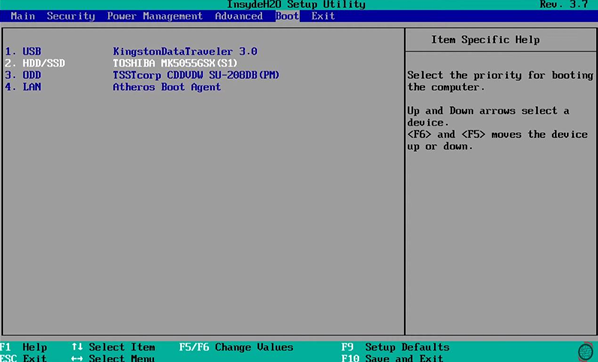

¿Qué es la BIOS/UEFI?
La BIOS (Basic Input/Output System) o UEFI (Unified Extensible Firmware Interface) es un software básico que se encuentra en la placa base de una computadora. Se encarga de realizar tareas fundamentales cuando la computadora se enciende, como:
- Inicializar y probar los componentes de hardware
- Cargar el sistema operativo
- Gestionar la configuración del sistema
Accediendo a la BIOS/UEFI
Para ingresar a la BIOS/UEFI, debes presionar una tecla específica repetidamente durante el arranque de la computadora. La tecla varía según la marca:
- Acer: F2
- ASUS: F2 o Suprimir
- Compaq: F10
- Dell: F2
- Fujitsu: F2
- HP: Escape o F10
- Lenovo: F1, F2 o botón nano
- Samsung: F2
- Sony: F1, F2, F3 o botón de asistencia
- Toshiba: F2
Consejo: Si no estás seguro de qué tecla usar, observa atentamente la pantalla durante el arranque. A menudo se muestra un mensaje que indica qué tecla presionar para acceder a la BIOS/UEFI.
Configuración del orden de arranque
- Una vez dentro de la BIOS/UEFI, busca la opción "Boot" o "Arranque"
- Localiza la configuración de orden de arranque (Boot Order)
- Mueve tu USB booteable a la primera posición de la lista 
- Guarda los cambios y sal de la BIOS/UEFI (usualmente con la tecla F10)
¡Precaución! Ten cuidado al modificar otras configuraciones en la BIOS/UEFI. Cambios incorrectos pueden afectar el rendimiento o la estabilidad de tu sistema.
Modos de arranque: UEFI vs. Legacy
Algunos sistemas ofrecen la opción de arrancar en modo UEFI o Legacy (BIOS). Para instalar Windows 10:
- Si tu disco está formateado como GPT, usa el modo UEFI
- Si tu disco está formateado como MBR, usa el modo Legacy
Si no estás seguro, consulta la documentación de tu computadora o el sitio web del fabricante.